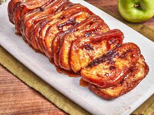

Salted Caramel Apple Bread
Home

Ingredients
- 1 can of buttermilk buscuits
- 2/3 cup of white surgar
- 1/3 cup brown sugar
- 2 tablespoons brown sugar
- 6 tablespoons of ground cinnamon
- 2/3 cup apple butter
- 2 tablespoons salted caramel sauce
- flaky sea salt
Cooking Directions:
- Preheat over to 350F
- stir sugar and cinnamon butter into a bowl. Place melted butter in another bowl. Lightly coat each buscuit in butter then lightly coat with sugar mixture.
- Place biscuit on loaf pan and spread apple butter on another biscuit. Repeat. Sprinkle remaining cinnamon sugar over the loaf.
- Bake in over until biscuits are golden brown and toothpick inserted into center comes out clean. Should take roughly 30 minutes. Let cool for 5 minutes.
- Drizzle caramen sauce and sprinkle salt if desired.